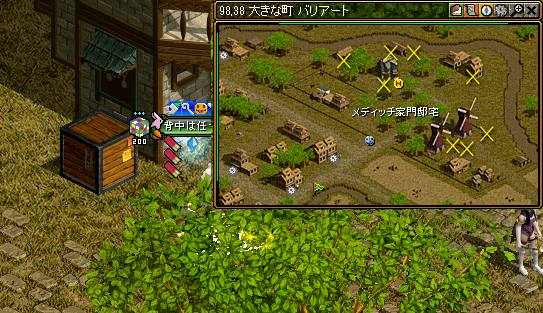

| 称号Lv | クエスト名 | 受諾可能Lv | 称号効果 |
| 取引人１ | 商道とは | Lv7〜 | 露天同時販売 可能数3個 |
| 取引人２ | 露天商試験支援 露天商試験解答集 |
Lv7〜 | 露天同時販売 可能数4個 |
| 取引人３ | 取引成立の条件 | Lv100〜 | 露天同時販売 可能数5個 |
| 取引人４ | アリアン侵攻の阻止 | Lv200〜 | 露天同時販売 可能数6個 |
| 取引人５ | ストライキ！ | Lv300〜 | 露天同時販売 可能数7個 |
ポーター２
【取引人１】商道とは「Lv7で受託可」

|
 古都ブルンネンシュティグ（76.75） 受検料５００Ｇを払い露天組合広報員と話して試験を受ける 古都ブルンネンシュティグ（76.75） 受検料５００Ｇを払い露天組合広報員と話して試験を受ける
解答 4133222241431411424133 |
|---|
ポーター２
【取引人２】露天商試験支援「Lv7で受託可」
|
|
称号担当官と話してクエスト開始位置までワープ
|
|---|---|
|
ネティスンと話してクエスト開始 ２００万G払って、全５問の質問に答える!! ?？問以上間違えると不合格。 問題はランダムで出される。 |
{kind=link}
Q：3000Goldのアイテムが、流通過程で315％のプレミアムが付きました。流通過程でついたプレミアムにさらに何％を上乗せすれば、販売価格が9900Goldになりますか？
A： 15％
A： 15％
Q：ある品物の原価の120％で品物を手に入れた。露天を開設し、それを10％の利潤を付けて販売した場合、9900Goldを手に入れた。原価はいくらでしょうか？
A： 7500Gold
A： 7500Gold
Q：ウルフマンと武道家が使う武器でバグナグという武器があります。この武器は基本防御力が上昇しますが、最も上質な物で防御力はいくつ上昇するでしょう？
A： 2
A： 2
Q：十字架のような追放天使、悪魔用の魔法ダメージ増加アイテムはどこで手に入れることが出来ますか？
A： アウグスタ
A： アウグスタ
Q：総人口が20人の島で誕生日を祝う事業を始めようと思います。誕生日が同じ二名が一緒に申し込む場合は、割引をするサービスを計画しています。そこで割引サービスの基準を決定するために誕生日が同じになる確率を求めようと思います。20人の中で、誕生日が少なくとも１組は同じになる確率は何％でしょうか？
A： 41％
A： 41％
Q：ターバンとチャドルは砂漠での生活には必須のアイテムです。この二つのアイテムを販売する商人はどこにいますか？
A： セスナの道
A： セスナの道
Q：高い能力を持つ装備品としてデラックスアイテムがあります。この装備品は使用する度に耐久度が減少し、修理をする必要がありますが、このアイテムはどこの商店で買うことが出来ますか？
A： 売っていない
A： 売っていない
Q：追放天使の翼補助が多く出回っていますが、この翼補助には特殊能力が付加してあります。その特殊能力とは何でしょうか？
A： 悪魔対抗ダメージ増加
A： 悪魔対抗ダメージ増加
Q：入場するためには、所持金の5％を通行料として支払わなければならない、秘密商店があります。あなたが10000ゴールドを持って5回出入りした場合、手元にいくら残るでしょうか？ただし、1ゴールド未満は切り捨てます。
A： 7736 gold
A： 7736 gold
Q：ビショップの武器の中で一部のものは相手をスタンさせる効果があります。他の武器にはスタンとは他の効果がありますが、それはどんな機能でしょうか？。
A： 不死対抗ダメージ増加
A： 不死対抗ダメージ増加
Q：ブルンネンシュティグの商人の中で、アイテムを一番低い価格で買い取る商人は誰でしょうか？
A： ステビン
A： ステビン
Q：ブローチ、腕刺青、肩刺青を購入することができる商店は、どの街にありましたか？
A： スマグ
A： スマグ
Q：魔法抵抗力がわずかに上昇する原石や宝石を販売している商店は、どこの街にありますか？
A： スマグ
A： スマグ
Q：丸太をピラミッド型に積み上げています。
３本の丸太を積み上げる場合は、一番下には２本の丸太を、
６本の丸太を積み上げる場合は、一番下には３本の丸太を並べます。
では、７８本の丸太を積み上げる場合、一番下には何本の丸太を並べる事になりますか？
A： 12本
３本の丸太を積み上げる場合は、一番下には２本の丸太を、
６本の丸太を積み上げる場合は、一番下には３本の丸太を並べます。
では、７８本の丸太を積み上げる場合、一番下には何本の丸太を並べる事になりますか？
A： 12本
Q：最も上質な騎兵刀のクリティカル確率は最大で何％でしょう？
A： 20％
A： 20％
Q：最も上質なショルダーパッドの防御力はどれでしょう？
A： 14％
A： 14％
Q：最も上質なハーフプレートの防御力はどれでしょう？
A： 14％
A： 14％
Q：最も上質の火矢による火ダメージの上限はどれでしょう？
A： 12％
A： 12％
銀行顧客３
【取引人３】取引成立の条件「Lv100で受託可」
|
|
 古都冒険家協会に行き称号担当官の前を記憶１推奨 称号担当官と話してクエスト開始位置までワープ 古都冒険家協会に行き称号担当官の前を記憶１推奨 称号担当官と話してクエスト開始位置までワープ
|
|---|---|
|
港町ブリッジヘッド（73.116） カンドスと話してクエスト開始 カンドスの前を記憶２
|
|
 スフィアの街移動【バリアート】へ ベラン(７３.９７)と話してクエスト開始 ベランの前を記憶３ スフィアの街移動【バリアート】へ ベラン(７３.９７)と話してクエスト開始 ベランの前を記憶３
|
|
|  |
 ワインの箱をクリックする！ ワインの箱をクリックする！ |
|
記憶３でベランの前へ ベラン(７３.９７)と話してクエストＵＰ |
|
 ジョン・マルコ１２１４１ ジョン・マルコ１２１４１で、シーフギルド倉庫［Ｃ］１Ｆに飛び、 すぐ左下の移動ポータルに入って町に出る。 ブリッジの街に出たら左上に進んでシーフギルド倉庫［Ａ］の１Ｆへ。 壺をクリックする！ |
|
|
記憶３でベランの前へ ベラン(７３.９７)と話してクエストＵＰ |
|
|
記憶２でカンドスの前へ カンドスと話してクエスト完了 |
{kind=link}
{kind=link}
{kind=link}
{kind=link}
取引人４
【取引人４】アリアン侵攻の阻止「Lv200で受託可」
{kind=link}
{kind=link}
{kind=link}
{kind=link}
取引人５
【取引人５】ストライキ！「Lv300で受託可」
{kind=link}
{kind=link}
{kind=link}
{kind=link}
参考サイト
https://khbsroom.com/